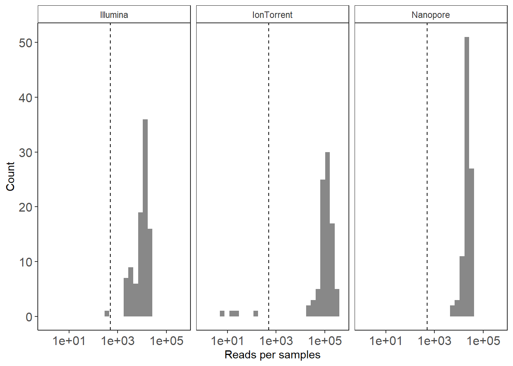
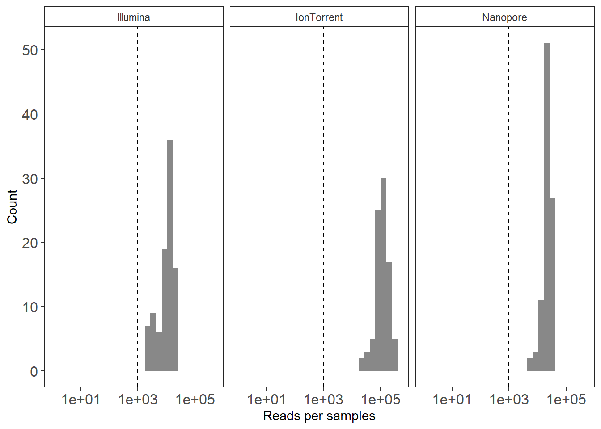

Now that we’ve cleaned up our taxonomy, let’s take a look at the read distribution across the samples and remove samples with low read depths.
Let’s load our latest Phyloseq object
## phyloseq-class experiment-level object
## otu_table() OTU Table: [ 5790 taxa and 282 samples ]
## sample_data() Sample Data: [ 282 samples by 11 sample variables ]
## tax_table() Taxonomy Table: [ 5790 taxa by 7 taxonomic ranks ]
## phy_tree() Phylogenetic Tree: [ 5790 tips and 5789 internal nodes ]and needed packages
library("microbiome")
library("microbiomeutilities")
library("cowplot")
library("ggpubr")
library("phyloseq")As mentioned previously, there are plenty of packages available to analyse metabaroding data. To summarize the data, the Microbiome package provide a simple command to get basic information about the data.
This will provide: - min, max, total, mean and median number of reads - number of singletons and low occurence ASVs (OTUs) - data sparsity (zero inflated data)
## List of 11
## $ : chr "1] Min. number of reads = 5"
## $ : chr "2] Max. number of reads = 480947"
## $ : chr "3] Total number of reads = 16214259"
## $ : chr "4] Average number of reads = 57497.3723404255"
## $ : chr "5] Median number of reads = 21437"
## $ : chr "7] Sparsity = 0.972872646651723"
## $ : chr "6] Any OTU sum to 1 or less? YES"
## $ : chr "8] Number of singletons = 1639"
## $ : chr "9] Percent of OTUs that are singletons \n (i.e. exactly one read detected across all samples)11.5371329879102"
## $ : chr "10] Number of sample variables are: 11"
## $ : chr [1:11] "InputFileName" "Samplename" "seq_tech" "SiteID" ...Since we have a more than 1600 singletons, lets remove the taxa that are not supported by at least 10 occurrences over the whole data set. This will help us control for technical errors, even if such a threshold remain subjective (see Rollin, Rong and Massart, 2023 for an interesting discussion on technical errors control) and Zhou et al. 2023 for examples of filtering thresholds.
combinedPS_clean_pruned = prune_taxa(taxa_sums(combinedPS_clean) > 09, combinedPS_clean); combinedPS_clean_pruned## phyloseq-class experiment-level object
## otu_table() OTU Table: [ 2969 taxa and 282 samples ]
## sample_data() Sample Data: [ 282 samples by 11 sample variables ]
## tax_table() Taxonomy Table: [ 2969 taxa by 7 taxonomic ranks ]
## phy_tree() Phylogenetic Tree: [ 2969 tips and 2968 internal nodes ]Lets have another look at the data summary:
## List of 11
## $ : chr "1] Min. number of reads = 5"
## $ : chr "2] Max. number of reads = 480942"
## $ : chr "3] Total number of reads = 16208539"
## $ : chr "4] Average number of reads = 57477.0886524823"
## $ : chr "5] Median number of reads = 21409"
## $ : chr "7] Sparsity = 0.951809358644528"
## $ : chr "6] Any OTU sum to 1 or less? NO"
## $ : chr "8] Number of singletons = 0"
## $ : chr "9] Percent of OTUs that are singletons \n (i.e. exactly one read detected across all samples)0"
## $ : chr "10] Number of sample variables are: 11"
## $ : chr [1:11] "InputFileName" "Samplename" "seq_tech" "SiteID" ...Another important thing is to identify and remove samples with low read counts. We can first plot the read distribution per sample using the plot_read_distribution function of the microbiomutilities package. Once again, there is no consensus on the minimum read depth threshold to consider a sample to be valid or to keep or not.
Lets first have a look at the read distribution per sample.
plot_read_distribution(combinedPS_clean,
groups = "seq_tech",
plot.type = "histogram")+
theme_biome_utils()+
scale_x_continuous(trans='log10',
limits=c(1, 500000))+
scale_fill_manual(values=c("#111111"))+
geom_vline(xintercept = 500,
colour = "black",
linetype="dashed")+
theme(legend.position="none")+
labs(x = "Reads per samples",
y = "Count")
We can see that only few samples have less than a 1000 reads, lets remove them.
(Rarefaction is also an option, it can be performed with the rarefy_even_depth function from the phyloseq package)
combinedPS_clean_pruned_filtered <- prune_samples(sample_sums(combinedPS_clean_pruned) >= 1000, combinedPS_clean_pruned);combinedPS_clean_pruned_filtered## phyloseq-class experiment-level object
## otu_table() OTU Table: [ 2969 taxa and 277 samples ]
## sample_data() Sample Data: [ 277 samples by 11 sample variables ]
## tax_table() Taxonomy Table: [ 2969 taxa by 7 taxonomic ranks ]
## phy_tree() Phylogenetic Tree: [ 2969 tips and 2968 internal nodes ]Lets first have a look at the read distribution per sample after filtering.
plot_read_distribution(combinedPS_clean_pruned_filtered,
groups = "seq_tech",
plot.type = "histogram")+
theme_biome_utils()+
scale_x_continuous(trans='log10',
limits=c(1, 500000))+
scale_fill_manual(values=c("#111111"))+
geom_vline(xintercept = 1000,
colour = "black",
linetype="dashed")+
theme(legend.position="none")+
labs(x = "Reads per samples",
y = "Count")